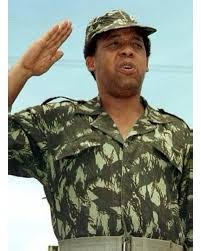

TRIBUTE TO CHRIS HANI

Chris Hani
Timeline of Chris Hani's Life
- June 28, 1942 - Chris Hani (born Martin Thembisile Hani) was born in Cofimvaba in the Transkei region of South Africa.
- 1957 - Joined the African National Congress (ANC) Youth League while in high school, becoming politically active at a
young age.
- 1961 - Graduated from Lovedale College and studied Latin and English at the University of Fort Hare, where he became more
involved in anti-apartheid activism.
- 1962 - Joined the South African Communist Party (SACP),Fled South Africa to go into exile, avoiding arrest by the apartheid government
- 1963 - Became a member of Umkhonto we Sizwe (MK), the armed wing of the ANC, and received military training
- 1967 - Fought in the Wankie and Sipolilo campaigns in present-day Zimbabwe, part of a joint operation between MK and the Zimbabwe
People's Revolutionary Army (ZIPRA).
- 1974 - Moved up within the ANC and MK ranks, eventually becoming the Chief of Staff of MK.
- 1990 - After the unbanning of the ANC and SACP, Hani returned to South Africa from exile and took a prominent role in the negotiations
to end apartheid.
- 1991 -Elected General Secretary of the SACP, advocating for socialism and workers' rights in post-apartheid South Africa.
- April 10, 1993-Chris Hani was assassinated outside his home in Boksburg by Janusz Walus, an anti-communist immigrant aligned with right-wing
extremists.Clive Derby-Lewis, a Conservative Party MP, was later found to be an accomplice.
- 1993 - Hani’s assassination fueled fears of a civil war, but Nelson Mandela's appeals for calm were instrumental in maintaining peace and progressing
toward democratic elections.
In 1994 South Africa held its first democratic elections, and the ANC came to power with Nelson Mandela as President.Hani is remembered as a hero
in the fight against apartheid, with numerous streets, buildings, and institutions named in his honor. His legacy remains influential in South African
politics. Chris Hani's vision for a united and free South Africa inspired millions, and his legacy continues to be honored as a symbol of sacrifice and dedication
to the liberation struggle.